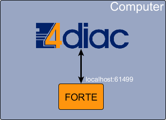
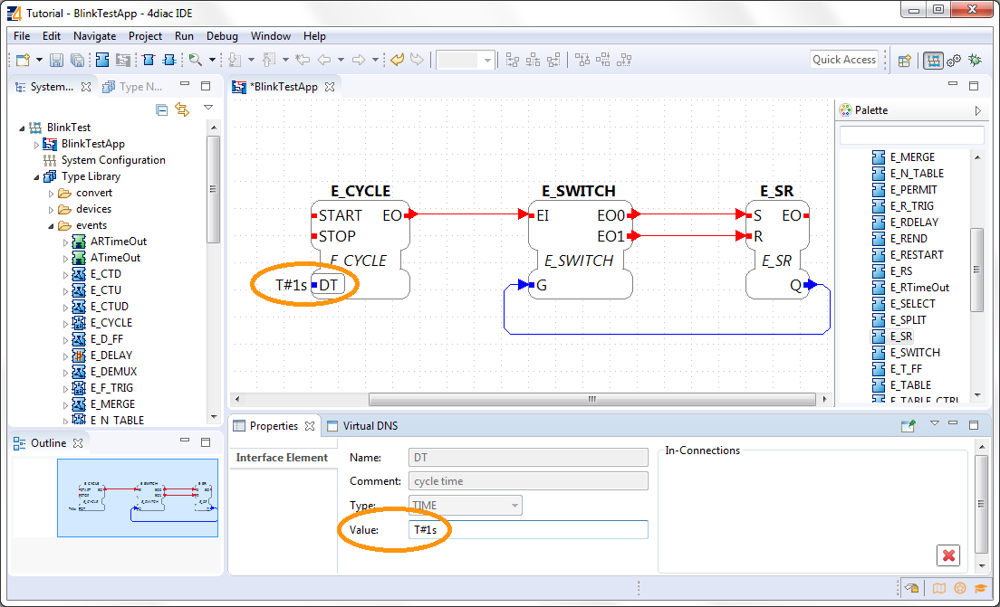
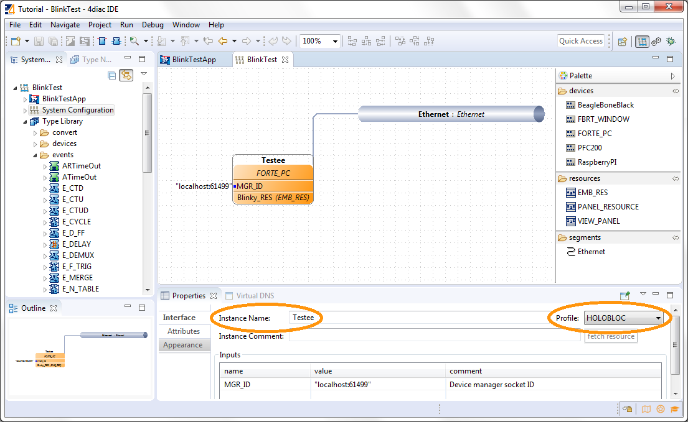
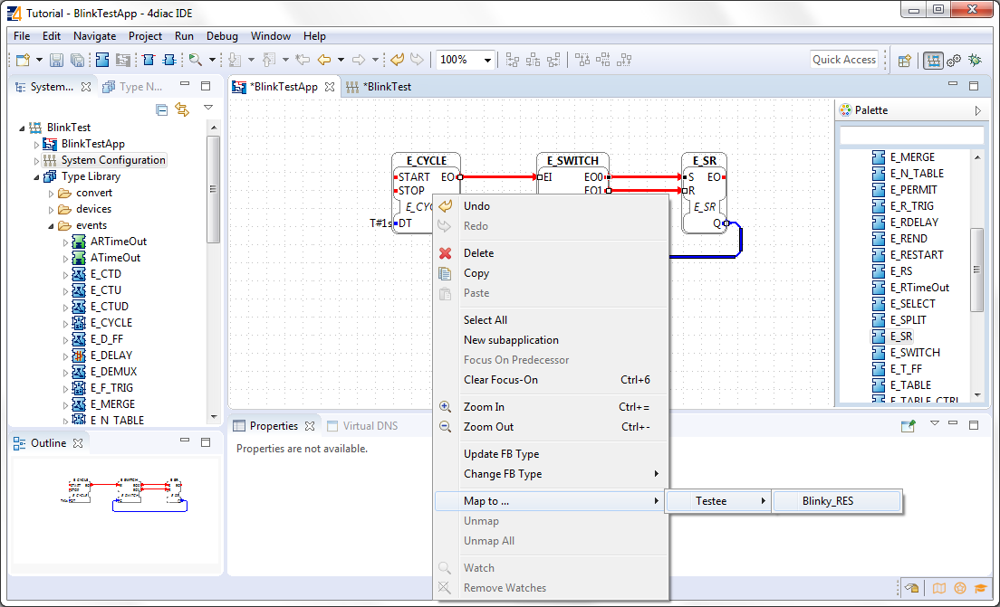
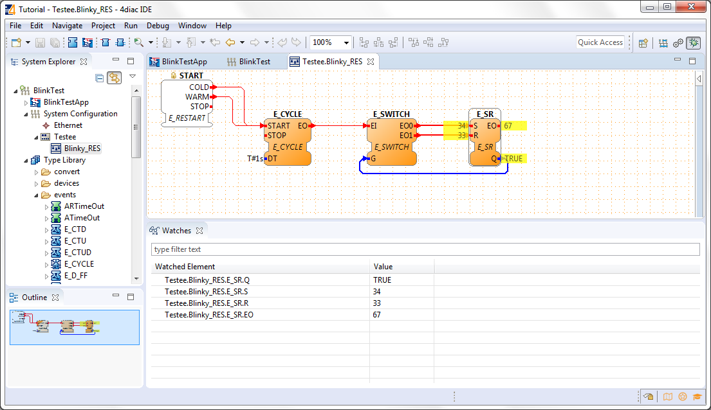
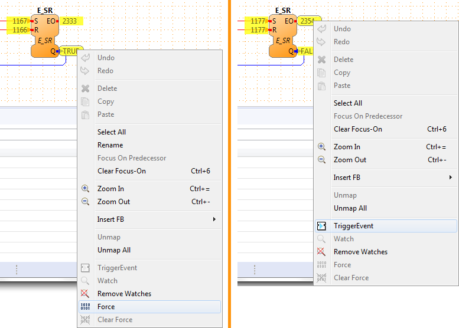

Button.
Button.This page is part of a guide that gives a walk-through over the major 4diac IDE features.
In this tutorial you create a simple Blinking application. It's the "Hello World" of automation programs, so it teaches the key aspects and workflow of 4diac IDE. The application will run locally, so no connection to any PLC or external hardware is needed. The architecture is shown below.
After completing Step 0 switch to the system perspective using the Button.
The system appears in the System Explorer on the left, click on the BlinkTest to unfold the tree. There you can see three things now:
By default, new systems contain a copy of the types in the Type Library. If different types are needed, for example from another project or another IEC 61499 engineering tool, these type files can be easily added by copying them into the project directory to the desired location. Furthermore the Type Navigator allows to drag and drop types between projects as well as within a project to a different folder.
A double-click on an Application in the System Explorer tab on the left opens the Application Editor for this specific application in the editor area.
The name in the middle of the FB is its type. If you CTRL + click on it, you can access the definition of the type of the FB. There you can see the interface and how it works. Check E_SWITCH and E_SR and go to the ECC tab to see how they behave.
The name on top of the FB is the instance name. Two FBs cannot have the same instance name. You can double-click on it to change it for a better organized application.
Event (red, on top part of FBs) and Data (blue, on lower part of FBs) connections can be generated by connecting the Event-/Data in- and outputs. Position the mouse pointer over an Event-/Data in- or output, click and drag to the other end of the connection to create one. Remember, Event and Data connections cannot be mixed. Events connections allow fan-in and fan-out. Data connections allow fan-out but not fan-in.

Here are some tips for editing the application:
Set the value to T#1s, meaning 1 second.
Now the application is done. You should try to understand how the application works. Something missing is the starting event. This would be done later when the hardware is configured. For now, imagine an event arrives to E_CYCLE.START. Every 1 second, and event output will be triggered in E_CYCLE.EO. The E_SWITCH will trigger an event output EO0 when G is zero, and EO1 when G is one. The value Q of E_SR will be 1 when an event at S arrive and 0 when an event at R arrive. Try to follow the flow of events and understand why this application makes Q toggle, considering it starts at 0.
First, let's define the devices that are present in our system. The automation hardware can be modelled with the System Configuration Editor. It can be opened by double clicking on the System Configuration tree node in the System Explorer on the left. By using Drag and Drop, Device, Resource and Segment types can be added from the palette. On an IEC 61499 Device several IEC 61499 Resources can be configured. Resources can be directly added to Devices.
Drag and Drop a
from the Palette.
Connect them by clicking on one and dragging to the other. The segment is divided in two areas, the left is for moving, the right for connections. The device can be connected by clicking on the device type (second row). One EMB_RES resource is already present in the device. The MGR_ID localhost:61499 specifies the IP:PORT where the device will run. In this case it'll run locally and will listen at the port 61499.
The color is automatically generated for better orientation in the system. When several devices or segments are in use, you can see at a glance where the FB belongs to. If you like to change the color, click on the device or segment. In the property view on the bottom of the screen you find the tab Appearance. Here you can choose a color you like best.
Check that the Profile in the Properties tab is set to HOLOBLOC.
For this tutorial we give the device the name testee.
Device names help us to distinguish the different devices from each other.
Names can be changes in the property view or by double-clicking on the name.
The resource is automatically generated for your convenience. EMB_RES stands for Embedded Resource.
We named it Blinky_RES.
Device and Resource parameters can either be specified directly at each Device/Resource or via the Properties View. The Properties View shows the parameters of a IEC 61499 Device/Resource (if it is selected either in the System Configuration Editor or in the System Manager View). The most important parameters are the IP address and the port of the device management interface as they are required for the communication between the engineering tool and the Devices (e.g. Download of IEC 61499 Applications).
In order to support different device vendors' download mechanism you need to specify the device profile to be used for your device. currently 4diac-IDE supports the following two device profiles:
Mapping FBs means defining in which device each FBs will run. All mapped FBs are changing their fill color to the device's color during the mapping process.
Go to the Application created before, select the FBs you want to map by clicking left and draw a rectangle over it (in this case all of them),

To unmap a Function Block instance from a Resource, use the context menu entry of a Function Block in the corresponding .
You can open the Resource Editor by double clicking the Resource (Blinky_RES) in the System Configuration, or in the tree in the System Explorer on the left.
There you can find a START function block in white. This is the default starter function block of the EMB_RES. This will trigger a COLD event when starting. The STOP is triggered when the PLC is set to a STOP state, and the WARM when the PLC changes from a STOP state back to a RUN state. Connect both COLD and WARM to E_CYCLE.START.

You also see the FBs that were previously mapped. You can add more FBs directly here and they will be already mapped to the resource, or you can unmap the FBs.
Before we test our application, let's briefly summarize the elements we've worked with.
| Element | Creation | Editation | Tutorial Name |
|---|---|---|---|
| System | new System | only children can be edited | BlinkTest |
| Application | first is automatically generated, furthermore via menu | Application Editor | BlinkTestApp |
| System Configuration | automatically generated, only one per system | System Configuration Editor | |
| Device | System Configuration Editor | System Configuration Editor | Testee |
| Resource | System Configuration Editor | Resource Editor | Blinky_RES |
In this step, the Blink application will be deployed to 4diac FORTE running locally on your computer.
 button.
button.Note: With the runtime launcher you can only start run-time environments on your local development computer. It is not possible to start run-time environments on remote computers or control devices. In order to perform this task device specific means to start the run-time environment have to be performed.
The Deployment Console is automatically cleared before each download.
Furthermore, with the icon  in the upper right corner of the Deployment Console the deployment messages can be cleared.
in the upper right corner of the Deployment Console the deployment messages can be cleared.
By selecting a Device or Resource the corresponding IEC 61499 element can be cleaned. This means that the Device or Resource configuration are cleaned and reset to the default configuration without any Function Block Network.
leaves the Device empty, and stops 4diac FORTE. You can deploy again after cleaning the Device.
deletes just the selected resource:

To observe the outputs of your Application you can use 4diac's monitoring functionality. You can enable it in the Toolbar under the Toolbar icon:  or doing the following:
or doing the following:
 button.
button.A green circle will appear in the system icon indicating that monitoring is enabled for the system. To watch variables, you can:

The Data and Events are monitored. The Data shows the current value and the Events show the times it was triggered. You can watch on the directly on the Element or in the Watches view.
Now you can see that true and false alternate. If a controller output were connected, a light would now blink at 1 second intervals.
You can force values to data inputs and trigger events by right clicking on it and selecting the corresponding command.
Now that you know how to do a centralized solution, let's try and distribute things:
Step 2 - Distribute 4diac applications
If you want to go the back to see an overall overview of 4diac IDE, here's a link
Step 0 - 4diac IDE - General View
If you want to go back to the Start Here page, we leave you here a fast access